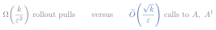

<!-- Slide 20: the quantum composition; the two factors lock together.  See assets/composition.js. -->
<div class="l2-fig">
<svg id="composition-fig" viewBox="0 0 760 270" width="980"></svg>
</div>
<div class="slide-equation compact">
  
</div>
<script src="../assets/composition.js" defer></script>
